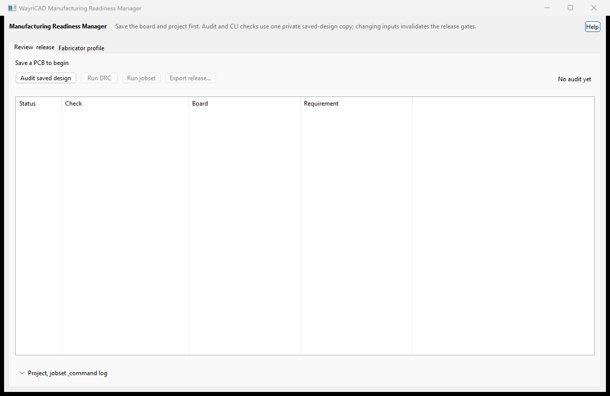

Packaging is blocked if a capability check fails or remains unknown. The source project is not modified. The saved PCB and live editor must match in every design token; KiCad IPC's temporary version and generator headers directly inside footprints are ignored. Exact saved file bytes are hashed and verified again before release.
The manager cannot infer contractual fabrication limits or certify the generated data. Confirm the current quotation, stackup, controlled impedance, material and finish requirements with the fabricator. The routed-edge check covers straight tracks and ordinary vias inside one closed straight Edge.Cuts outline; routed arcs, via padstacks and unsupported outlines remain UNKNOWN. Pads, zones and fabrication tolerances require KiCad DRC and fabricator review.
Saved-footprint plated and nonplated drill/slot dimensions are audited alongside vias. Custom plated through-hole anchors and offset drills provide conservative annular-ring lower bounds. A bound proves PASS only when it meets the profile; a smaller bound is UNKNOWN unless an exact pad or via already proves FAIL. Explicit per-layer padstacks are included only when every layer has a supported shape and size; other geometry also leaves the annular-ring check UNKNOWN while preserving the independent checks. No applicable objects is N/A, never an infinite passing measurement.
Save the matching PCB/project and choose that project directory. Fabricator geometry limits use the profile's documented millimetre dimensions; verify drill, annular ring, track, clearance, edge clearance and thickness limits against the actual quotation. Select a project-local jobset when its outputs belong in the release.
| Status | Action |
|---|---|
| PASS | This individual declared check met its limit. Other release gates still apply. |
| FAIL | Correct the design or reviewed fabrication profile and repeat the audit. |
| UNKNOWN | Provide missing evidence or resolve unsupported geometry. Packaging remains blocked. |
| N/A | No applicable object exists for that check. This is not a measured infinite margin. |
The resulting archive contains verified captured files and a SHA-256 manifest. It does not modify the source project or certify fabrication, assembly or electrical suitability.